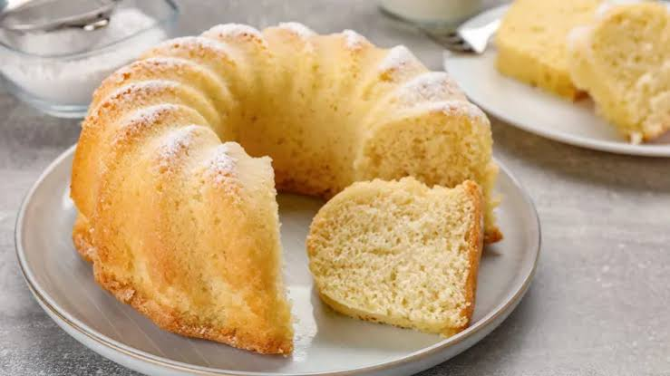

Bizcocho de vainilla

El bizcocho de vainilla es una de las preparaciones básicas de la repostería y una receta imprescindible para cualquier amante de los postres. Su textura ligera y esponjosa y su delicado sabor a vainilla lo convierten en una excelente opción para disfrutar acompañado de un café o utilizar como base para tortas rellenas y decoradas.